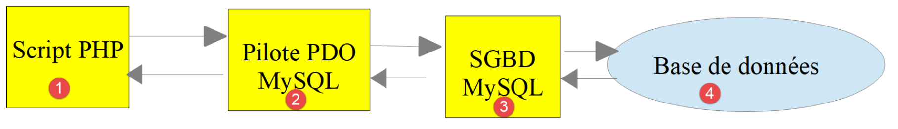
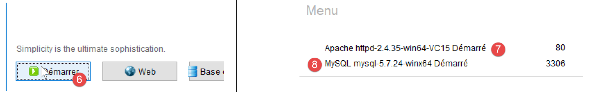
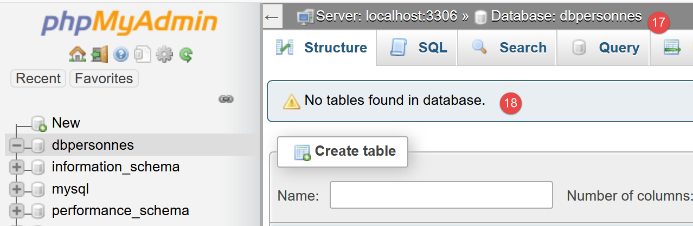
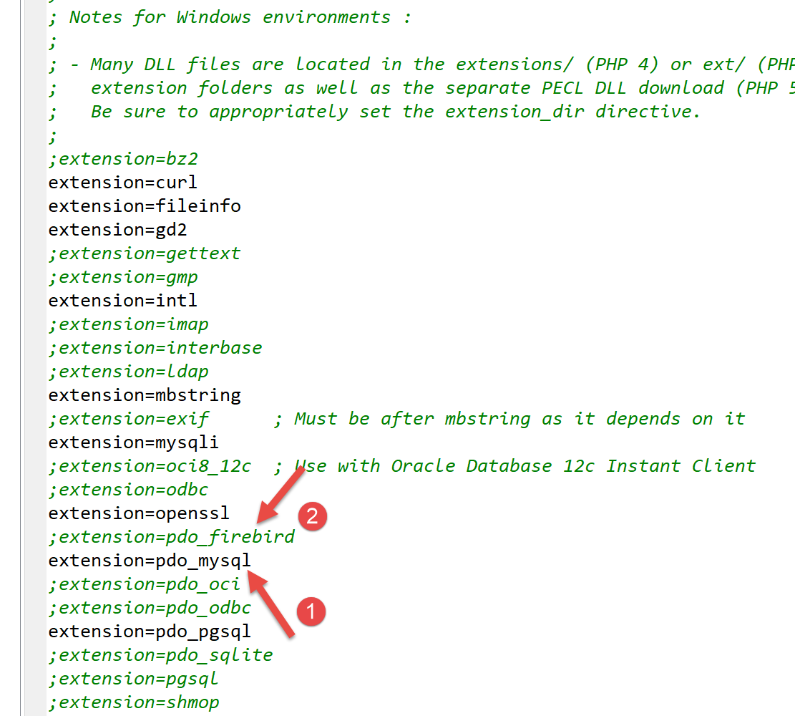
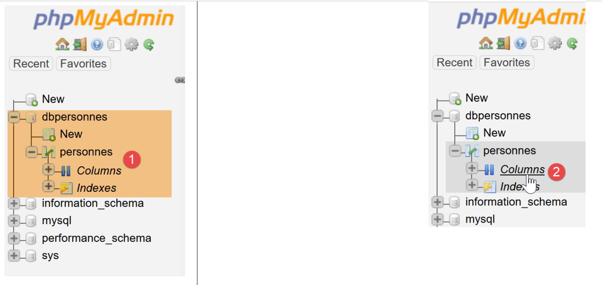

12. Utilização do SGBD MySQL

Vamos agora escrever scripts PHP utilizando uma base de dados MySQL:

Na arquitetura acima, o script PHP (1) não comunica diretamente com o SGBD (Sistema de Gestão de Bases de Dados) (3). Comunica com um intermediário chamado controlador de SGBD. O PHP fornece uma interface padrão para estes controladores, a interface PDO (PHP Data Objects). Esta interface é implementada por diferentes classes adaptadas a cada SGBD: uma classe para o SGBD MySQL, outra para o SGBD PostgreSQL… Para mudar de SGBD, trocamos de controlador:

O controlador PDO isola o script PHP (1) do SGBD (3, 6). Uma vez que estes controladores implementam uma interface padrão, seria de esperar que o script PHP (1) permanecesse inalterado ao mudar do SGBD MySQL (3) para o SGBD PostgreSQL (6). Na realidade, esse ideal não existe. De facto, para comunicar com o SGBD, o script PHP envia comandos SQL (Structured Query Language). Esta é uma linguagem implementada por todos os SGBDs, mas é incompleta. Consequentemente, os SGBDs adicionaram-lhe comandos proprietários. Esta é uma das principais causas de incompatibilidade entre SGBDs. Além disso, os tipos de dados que podem ser utilizados nas bases de dados podem diferir de um SGBD para outro. Por exemplo, o PostgreSQL suporta uma gama muito mais ampla de tipos de dados do que o SGBD MySQL. Esta é uma segunda causa de incompatibilidade. Outra causa é o tratamento das chaves primárias automáticas (geradas pelo SGBD): praticamente todos os SGBDs têm a sua própria política. Etc… Existem inúmeras causas de incompatibilidade.
Se quiser evitar reescrever o script PHP (1) ao mudar do MySQL (3) para o PostgreSQL (6), geralmente terá de inserir uma nova camada entre o script PHP (1) e o controlador PDO (2, 5), cuja função será resolver as incompatibilidades entre os dois SGBDs. No entanto, nos casos simples com que nos depararemos, esta camada adicional não será necessária.
Vamos agora utilizar o SGBD MySQL. Este está incluído no pacote Laragon (ver secção de links).
Se o leitor for novo nos conceitos de bases de dados e SQL, poderá achar útil o documento [http://sergetahe.com/cours-tutoriels-de-programmation/cours-tutoriel-sql-avec-le-sgbd-firebird/]. Este documento utiliza o SGBD Firebird em vez do MySQL, mas aborda os fundamentos das bases de dados e do SQL. Tal como o MySQL, o Firebird oferece uma versão disponível gratuitamente com um consumo de memória reduzido.
12.1. Criação de uma base de dados
Vamos agora mostrar-lhe como criar uma base de dados e um utilizador MySQL utilizando a ferramenta Laragon.

- Uma vez iniciado, o Laragon [1] pode ser gerido a partir de um menu [2];
- Em [3-5], instale a ferramenta de administração do MySQL [phpMyAdmin], caso ainda não esteja instalada;

- Em [6], inicie o servidor web Apache e o SGBD MySQL;
- Em [7], o servidor Apache é iniciado;
- Em [8], o servidor de bases de dados MySQL é iniciado;

- Em [8-10], crie uma base de dados com o nome [dbpersonnes] [11]. Iremos construir uma base de dados de pessoas;

- em [11], iremos gerir a base de dados que acabámos de criar;

- A operação [Bases de dados] envia um pedido web para o URL [http://localhost/phpmyadmin]. O servidor web Apache do Laragon responde. O URL [http://localhost/phpmyadmin] é o URL do utilitário [phpMyAdmin] que instalámos anteriormente [5]. Este utilitário permite-lhe gerir bases de dados MySQL;
- por predefinição, as credenciais de início de sessão do administrador da base de dados são: root [13] sem palavra-passe [14];

- em [16], a base de dados que criámos anteriormente;

- por enquanto, temos uma base de dados [dbpersonnes] [17] que está vazia [18];
Criamos um utilizador [admpersonnes] com a palavra-passe [nobody] que terá privilégios totais na base de dados [dbpersonnes]:

- em [19], estamos posicionados na base de dados [dbpersonnes];
- em [20], selecionamos o separador [Privilégios];
- em [21-22], vemos que o utilizador [root] tem privilégios totais na base de dados [dbpersonnes];
- em [23], criamos um novo utilizador;

- em [25-26], o utilizador terá o nome de utilizador [admdbpersonnes];
- em [27-29], a sua palavra-passe será [nobody];
- Em [30], o phpMyAdmin indica que a palavra-passe é muito fraca (fácil de descodificar). Num ambiente de produção, é melhor gerar uma palavra-passe forte utilizando [31];
- Em [32], especifica-se que o utilizador [admdbpersonnes] deve ter privilégios totais na base de dados [dbpersonnes];
- Em [33], as informações fornecidas são validadas;

- Em [35], o phpMyAdmin indica que o utilizador foi criado;
- Em [36], a consulta SQL que foi executada na base de dados;
- Em [37], o utilizador [admpersonnes] tem privilégios totais sobre a base de dados [dbpersonnes];
Agora temos:
- uma base de dados MySQL [dbpersonnes];
- um utilizador [admpersonnes/nobody] que tem acesso total a esta base de dados;
Vamos escrever scripts PHP para interagir com a base de dados. O PHP dispõe de várias bibliotecas para a gestão de bases de dados. Vamos utilizar a biblioteca PDO (PHP Data Objects), que atua como intermediária entre o código PHP e o SGBD:

A biblioteca PDO permite que o script PHP se abstraia da natureza exata do SGBD que está a ser utilizado. Assim, como mostrado acima, o SGBD MySQL pode ser substituído pelo SGBD PostgreSQL com um impacto mínimo no código do script PHP. Esta biblioteca não está disponível por predefinição. Pode verificar a sua disponibilidade da seguinte forma:

- Em [1-4], verifique as extensões PDO ativas;
- em [5], pode ver que a extensão PDO para o SGBD MySQL está ativa. As outras não estão. Basta clicar nelas para as ativar;
Outra forma de ativar uma extensão é editar diretamente o ficheiro [php.ini] (ver link) que configura o PHP:

- em [1], a extensão PDO do MySQL está ativada;
- Em [2], a extensão PDO do Firebird está desativada;
Após modificar o ficheiro [php.ini], é necessário reiniciar o PHP do Laragon para que as alterações tenham efeito.
12.2. Ligar-se a uma base de dados MySQL
A ligação a um SGBD é feita através da criação de um objeto PDO. O construtor aceita vários parâmetros:
Os parâmetros têm os seguintes significados:
$dsn | (Nome da fonte de dados) é uma cadeia de caracteres que especifica o tipo de SGBD e a sua localização na Internet. A cadeia de caracteres "mysql:host=localhost" indica que estamos a lidar com um SGBD MySQL em execução no servidor local. Esta cadeia de caracteres pode incluir outros parâmetros, tais como a porta de escuta do SGBD e o nome da base de dados à qual pretendemos ligar-nos: "mysql:host=localhost:port=3306:dbname=dbpersonnes"; |
$user | nome de utilizador do utilizador que está a iniciar sessão; |
$passwd | a sua palavra-passe; |
$driver_options | um conjunto de opções para o controlador do SGBD; |
Apenas o primeiro parâmetro é obrigatório. O objeto criado desta forma servirá então de base para todas as operações realizadas na base de dados à qual se ligou. Se o objeto PDO não puder ser criado, é lançada uma PDOException.
Aqui está um exemplo de uma ligação [mysql-01.php]:
<?php
// connection to a local MySql database
// user identity is (admpersonnes,nobody)
const ID = "admpersonnes";
const PWD = "nobody";
const HOTE = "localhost";
try {
// connection
$dbh = new PDO("mysql:host=".HOTE, ID, PWD);
print "Connexion réussie\n";
// closing the connection
$dbh = NULL;
} catch (PDOException $e) {
print "Erreur : " . $e->getMessage() . "\n";
exit();
}
Resultados:
Comentários
- Linha 11: A ligação a um SGBD é estabelecida através da criação de um objeto PDO. O construtor é utilizado aqui com os seguintes parâmetros:
- uma cadeia de caracteres que especifica o tipo de SGBD e a sua localização na Internet. A cadeia de caracteres «mysql:host=localhost» indica que se trata de um SGBD MySQL em execução no servidor local. A porta não foi especificada. Por isso, é utilizada a porta 3306 por predefinição. O nome da base de dados também não foi especificado. Será então estabelecida uma ligação ao SGBD MySQL, devendo a seleção de uma base de dados específica ser efetuada posteriormente;
- um ID de utilizador;
- a sua palavra-passe;
- linha 14: a ligação é encerrada através da destruição do objeto PDO criado inicialmente;
- linha 15: a ligação a um SGBD pode falhar. Neste caso, é lançada uma PDOException. Esta exceção deriva da [RuntimeException] do PHP;
- linha 16: a mensagem de erro da exceção é exibida;
Vamos executar novamente o script inserindo uma palavra-passe incorreta na linha 6. O resultado é o seguinte:
Erreur : SQLSTATE[HY000] [1045] Access denied for user 'admpersonnes'@'localhost' (using password: YES)
12.3. Criação de uma tabela
O script [mysql-02.php] demonstra como criar uma tabela numa base de dados:
<?php
// database identity
const DSN = "mysql:host=localhost;dbname=dbpersonnes";
// user login
const ID = "admpersonnes";
const PWD = "nobody";
try {
// connection to the MySql database
$connexion = new PDO(DSN, ID, PWD);
// delete the people table if it exists
$sql = "drop table personnes";
$connexion->exec($sql);
// create people table
$sql = "create table personnes (prenom varchar(30) NOT NULL, nom varchar(30) NOT NULL, age integer NOT NULL, primary key(nom,prenom))";
$connexion->exec($sql);
} catch (PDOException $ex) {
// error display
print "Erreur : " . $ex->getMessage() . "\n";
} finally {
// disconnect if necessary
$connexion = NULL;
}
// end
print "Terminé\n";
exit;
Comentários
- linha 11: ligar-se à base de dados. Esta é sempre a primeira coisa a fazer. O resultado da ligação é um objeto [PDO] através do qual serão realizadas as operações na base de dados;
- linha 13: a instrução SQL [drop table people] irá eliminar a tabela [people] da base de dados [people_db]. Se a tabela [people] não existir, isto não causa um erro;
- linha 14: execução da instrução SQL anterior no banco de dados [dbpersonnes]. Esta execução pode lançar uma [PDOException], que será capturada na linha 18;
- Linha 16: Esta instrução SQL cria uma tabela chamada [people]. Uma tabela é composta por linhas e colunas. As colunas constituem o que se denomina estrutura da tabela. As linhas constituem o conteúdo da tabela. Uma base de dados pode conter uma ou mais tabelas. A tabela [people] terá três colunas:
- first_name: o primeiro nome de uma pessoa como uma cadeia de caracteres com um máximo de 30 caracteres;
- last_name: o apelido dessa mesma pessoa como uma cadeia de caracteres com um máximo de 30 caracteres;
- age: a idade da pessoa como um número inteiro;
- O atributo NOT NULL numa coluna exige que a coluna tenha um valor. A não indicação de um valor resulta numa [PDOException];
- [primary key(last_name,first_name)] define uma chave primária para a tabela [people]. Uma chave primária tem um valor único para cada linha da tabela. Aqui, a chave primária é obtida através da concatenação das colunas [last_name] e [first_name] da linha. Esta restrição garante que a tabela não pode conter duas pessoas com o mesmo apelido e nome próprio — ou seja, duas pessoas com o mesmo nome. A criação de uma entrada duplicada para uma pessoa na tabela desencadeia uma [PDOException];
- linha 17: execução da consulta SQL na base de dados [dbpersonnes];
- linha 20: se ocorrer uma [PDOException], a mensagem de erro associada é exibida;
- linhas 21–24: inserimos a cláusula [finally] em todos os casos, ocorra ou não uma exceção, para fechar a ligação à base de dados (linha 23);
Resultados:
Se o script for executado sem erros, a tabela pode ser vista no phpMyAdmin:


- em [3] a base de dados;
- em [4], a tabela é apresentada;
- em [5], a estrutura da tabela é apresentada no separador [Estrutura];
- em [6-8], as três colunas da tabela;
- em [9], nenhuma das três colunas pode estar vazia;

- em [10], a lista de índices da tabela. Um índice permite-lhe encontrar linhas na tabela com um índice específico mais rapidamente do que se tivesse de percorrer sequencialmente as linhas da tabela. A chave primária faz sempre parte dos índices, mas um índice pode não ser uma chave primária;
- em [11], o índice é a chave primária aqui;
- em [12], o índice é composto pelas colunas [last_name, first_name] de cada linha;
Agora, vamos ver o que acontece se criarmos erros no nome da base de dados, no nome de utilizador e na palavra-passe, respetivamente:
Se introduzirmos um nome de base de dados inexistente:
Erreur : SQLSTATE[HY000] [1044] Access denied for user 'admpersonnes'@'%' to database 'dbpersonnes2'
Se introduzirmos um nome de utilizador inexistente:
Erreur : SQLSTATE[HY000] [1045] Access denied for user 'admpersonnes2'@'localhost' (using password: YES)
Se for introduzida uma palavra-passe incorreta:
Erreur : SQLSTATE[HY000] [1045] Access denied for user 'admpersonnes'@'localhost' (using password: YES)
12.4. Preenchimento de uma tabela
Vamos escrever um script PHP que execute os comandos SQL encontrados no seguinte ficheiro de texto [creation.txt]:
Comentários
- O SQL (Structured Query Language) não distingue maiúsculas de minúsculas nos comandos SQL;
- Linha 1: Eliminamos a tabela [people] se esta existir;
- Linha 2: Informamos ao servidor MySQL que iremos enviar-lhe caracteres codificados em UTF-8. Este comando SQL específico do MySQL é necessário aqui, por exemplo, para garantir que o «é» em Géraldine apareça corretamente na base de dados. Se omitirmos a linha 2, o «é» será convertido numa sequência de dois caracteres estranhos. O cliente é o script PHP escrito no NetBeans. Este script codifica os ficheiros em UTF-8 [1-4], conforme mostrado abaixo:

- linha 3: criação da tabela [people] com três colunas (first_name, last_name, age) e a chave primária (last_name, first_name);
- linhas 4–10: inserção de 7 linhas na tabela [people];
- linha 6: esta instrução de inserção deve falhar porque tenta a mesma inserção que a linha 5. A restrição da chave primária deve impedir esta inserção: duas pessoas não podem ter o mesmo nome e apelido;
- linha 10: esta instrução de inserção deve falhar porque tenta a mesma inserção que a linha 9;
O script PHP responsável pela execução das instruções SQL contidas neste ficheiro de texto é o seguinte [mysql-03.php]:
<?php
// database identity
const DSN = "mysql:host=localhost;dbname=dbpersonnes";
// user login
const ID = "admpersonnes";
const PWD = "nobody";
// identity of the SQL command text file to be executed
const SQL_COMMANDS_FILENAME = "creation.txt";
// open database connection MySql
try {
$connexion = new PDO(DSN, ID, PWD);
} catch (PDOException $ex) {
// error display
print "Erreur : " . $ex->getMessage() . "\n";
exit;
}
// we want every SGBD error to trigger an exception
$connexion->setAttribute(PDO::ATTR_ERRMODE, PDO::ERRMODE_EXCEPTION);
// order file execution SQL
$erreurs = exécuterCommandes($connexion, SQL_COMMANDS_FILENAME, TRUE, FALSE);
// locking connection
$connexion = NULL;
//display number of errors
printf("\n-----------------------\nIl y a eu %d erreur(s)\n", count($erreurs));
for ($i = 0; $i < count($erreurs); $i++) {
print "$erreurs[$i]\n";
}
// it's over
print "Terminé\n";
exit;
// ---------------------------------------------------------------------------------
function exécuterCommandes(PDO $connexion, string $SQLFileName, bool $suivi = FALSE, bool $arrêt = TRUE): array {
// uses the $connexion connection
// executes the SQL commands contained in the SQLFileName text file
// this is a file of SQL commands to be executed one per line
// if $suivi=1 then each execution of a SQL order is displayed as a success or failure
// if $arrêt=1, the function stops on the 1st error encountered, otherwise it executes all sql commands
// the function returns an array (nb of errors, error1, error2...)
// check for the presence of the SQLFileName file
if (!file_exists($SQLFileName)) {
return ["Le fichier [$SQLFileName] n'existe pas"];
}
// execution of SQL queries contained in SQLFileName
// we put them in a table
$requêtes = file($SQLFileName);
// mistake?
if ($requêtes === FALSE) {
return ["Erreur lors de l'exploitation du fichier SQL [$SQLFileName]"];
}
// execute requests one by one - initially no errors
$erreurs = [];
$i = 0;
$fini = FALSE;
while ($i < count($requêtes) && !$fini) {
// retrieve the query text
// trim will remove the end-of-line marker
$requête = trim($requêtes[$i]);
// empty query?
if (strlen($requête) == 0) {
// ignore the request and move on to the next request
$i++;
continue;
}
try {
// query execution - an exception may be thrown
$connexion->exec($requête);
// screen tracking or not?
if ($suivi) {
print "$requête : Exécution réussie\n";
}
} catch (PDOException $ex) {
// an error has occurred
addError($erreurs, $requête, $ex->getMessage(), $suivi);
// shall we stop?
$fini = $arrêt;
}
// following request
$i++;
}
// result
return $erreurs;
}
function addError(array &$erreurs, string $requête, string $msg, bool $suivi): void {
// add an error msg
$msg = "$requête : Erreur (" . $msg . ")";
$erreurs[] = $msg;
// screen tracking or not?
if ($suivi) {
print "$msg\n";
}
}
Comentários
- A função [executeCommands] (linhas 36–89) é responsável pela execução dos comandos SQL encontrados no ficheiro de texto [$SQLFileName] (parâmetro 2). Para os executar, utiliza a ligação aberta [$connection] (parâmetro 1) ao servidor MySQL. O terceiro parâmetro [$log] é um valor booleano que controla a saída no ecrã: se for TRUE, a instrução SQL executada é apresentada no ecrã juntamente com o seu sucesso ou falha; caso contrário, a execução da instrução SQL é silenciosa. O quarto parâmetro [$stop] controla o que fazer quando um comando SQL falha: se for TRUE, indica que a execução dos comandos SQL deve parar; caso contrário, continua. A função [executeCommands] devolve uma matriz de mensagens de erro, vazia se não houver erros;
- linhas 11–18: abrimos a ligação à base de dados MySQL [dbpersonnes]. Se a abertura da ligação falhar, é apresentada uma mensagem de erro e o processo é interrompido (linhas 14–18);
- linha 22: Passamos então uma ligação aberta para a função [executeCommands]. Esta será encerrada quando a função retornar (linha 24);
- linha 20: Antes de passar para a função [executeCommands], a ligação é configurada. Em caso de erro, as operações SQL com um objeto [PDO] podem devolver o valor booleano FALSE (valor por defeito) ou lançar uma exceção. A linha 20 opta pela segunda opção. De facto, é fácil «esquecer-se» de verificar o resultado booleano da execução de um comando SQL. Isto acabará por causar um erro noutro local do código, tornando mais difícil rastrear a origem original. No caso de uma exceção não tratada (sem bloco catch), a exceção propagar-se-á pela cadeia de código até encontrar um bloco catch ou chegar ao interpretador PHP, que irá interceptar a exceção. Neste caso, a natureza da exceção e a sua origem no código são apresentadas;
- linha 22: a função [executeCommands] é chamada para executar o ficheiro de comando SQL [$SQLFileName];
- linhas 45–47: verificamos se o ficheiro de comandos SQL existe realmente. Caso contrário, registamos o erro e devolvemos este resultado;
- linha 51: os comandos SQL são colocados numa matriz [$queries]. Linhas 53–55: se a operação falhar, é devolvida uma matriz de erros contendo uma única mensagem;
- linha 57: acumulamos os erros na matriz [$errors];
- linha 58: número da consulta;
- linha 59: o booleano [$finished] controla a execução das instruções SQL na matriz [$queries]. Quando se torna TRUE, a execução pára;
- linha 60: percorremos todas as consultas;
- linha 63: extraímos o texto do comando SQL #i. A função [trim] remove os espaços antes e depois do texto do comando SQL. Por «espaços», entendemos o caractere de espaço \b, o retorno de carro \r, o avanço de linha \n, o avanço de página \f, a tabulação \t… O que importa aqui é que o avanço de linha no texto SQL será removido;
- linhas 65–69: se o texto SQL estiver vazio, a consulta é ignorada e passamos para a seguinte;
- linha 72: enviamos o comando SQL para o servidor MySQL. O método [PDO::exec] lançará uma exceção se a execução falhar. Note que este comportamento se deve à configuração definida na linha 20;
- linha 79: a mensagem de erro é adicionada à matriz de erros;
- linha 81: o booleano [$fini] que controla o loop é definido. Se o parâmetro [$arrêt] (linha 36) for TRUE, o loop deve ser interrompido;
- linhas 74–76: se a instrução SQL for executada com sucesso, é apresentada no ecrã se o parâmetro [$tracking] (linha 36) for TRUE;
- Linha 87: Assim que todas as instruções SQL tiverem sido executadas, a matriz de erros [$errors] é devolvida;
A função [adError] nas linhas 90–97 permite que um erro seja adicionado à matriz de erros [$errors]:
- linha 90: a função recebe 4 parâmetros:
- o parâmetro [$errors] é passado por referência. Isto porque queremos modificar a matriz passada como parâmetro, e não uma cópia da mesma;
- o parâmetro [$query] é o texto SQL da instrução que falhou;
- o parâmetro [$msg] é a mensagem de erro associada à consulta que falhou;
- o booleano [$log] indica se a mensagem de erro deve ser exibida ($log=TRUE) ou não ($log=FALSE) na consola;
A função [executeCommands] é chamada pelo script nas linhas 3–33:
- linhas 11–18: é estabelecida uma ligação com a base de dados MySQL [dbpersonnes];
- linha 20: a ligação é configurada;
- linha 22: o ficheiro de comandos SQL é então executado;
- linha 24: a ligação é encerrada;
- Linhas 26–29: exibem os erros devolvidos pela função [executeCommands];
Saída no ecrã:
drop table if exists personnes : Exécution réussie
SET NAMES 'utf8' : Exécution réussie
create table personnes (prenom varchar(30) not null, nom varchar(30) not null, age integer not null, primary key (nom,prenom)) : Exécution réussie
insert into personnes (prenom, nom, age) values('Paul','Langevin',48) : Exécution réussie
insert into personnes (prenom, nom, age) values ('Sylvie','Lefur',70) : Exécution réussie
insert into personnes (prenom, nom, age) values ('Sylvie','Lefur',70) : Erreur (SQLSTATE[23000]: Integrity constraint violation: 1062 Duplicate entry 'Lefur-Sylvie' for key 'PRIMARY')
insert into personnes (prenom, nom, age) values ('Pierre','Nicazou',35) : Exécution réussie
insert into personnes (prenom, nom, age) values ('Géraldine','Colou',26) : Exécution réussie
insert into personnes (prenom, nom, age) values ('Paulette','Girond',56) : Exécution réussie
insert into personnes (prenom, nom, age) values ('Paulette','Girond',56) : Erreur (SQLSTATE[23000]: Integrity constraint violation: 1062 Duplicate entry 'Girond-Paulette' for key 'PRIMARY')
-----------------------
Il y a eu 2 erreur(s)
insert into personnes (prenom, nom, age) values ('Sylvie','Lefur',70) : Erreur (SQLSTATE[23000]: Integrity constraint violation: 1062 Duplicate entry 'Lefur-Sylvie' for key 'PRIMARY')
insert into personnes (prenom, nom, age) values ('Paulette','Girond',56) : Erreur (SQLSTATE[23000]: Integrity constraint violation: 1062 Duplicate entry 'Girond-Paulette' for key 'PRIMARY')
Terminé
Os registos inseridos estão visíveis no phpMyAdmin:

12.5. Execução de instruções SQL arbitrárias
O script a seguir demonstra a execução de instruções SQL a partir do seguinte ficheiro de texto [sql.txt]:
Entre estas instruções SQL, encontra-se a instrução SELECT, que devolve resultados da base de dados; as instruções INSERT, UPDATE e DELETE, que modificam a base de dados sem devolver resultados; e, por fim, instruções inválidas, como a última (xselect). O script [mysql-04.php] é o seguinte:
<?php
// database identity
const DSN = "mysql:host=localhost;dbname=dbpersonnes";
// user login
const ID = "admpersonnes";
const PWD = "nobody";
// identity of the SQL command text file to be executed
const SQL_COMMANDS_FILENAME = "sql.txt";
try {
// connection to the MySql database
$connexion = new PDO(DSN, ID, PWD);
} catch (PDOException $ex) {
// error display
print "Erreur : " . $ex->getMessage() . "\n";
exit;
}
// we want every SGBD error to trigger an exception
$connexion->setAttribute(PDO::ATTR_ERRMODE, PDO::ERRMODE_EXCEPTION);
// order file execution SQL
$erreurs = exécuterCommandes($connexion, SQL_COMMANDS_FILENAME, TRUE, FALSE);
// locking connection
$connexion = NULL;
//display number of errors
printf("\n-----------------------\nIl y a eu %d erreur(s)\n", count($erreurs));
for ($i = 0; $i < count($erreurs); $i++) {
print "$erreurs[$i]\n";
}
// it's over
print "Terminé\n";
exit;
// ---------------------------------------------------------------------------------
function exécuterCommandes(PDO $connexion, string $SQLFileName, bool $suivi = FALSE, bool $arrêt = TRUE): array {
………………………………………………………….
// execute requests one by one - initially no errors
$erreurs = [];
$i = 0;
$fini = FALSE;
while ($i < count($requêtes) && !$fini) {
// retrieve the query text
// trim will remove the end-of-line marker
$requête = trim($requêtes[$i]);
// empty query?
if (strlen($requête) == 0) {
// ignore the request and move on to the next request
$i++;
continue;
}
// query execution
// we retrieve its name
$commande = "";
if (preg_match("/^\s*(\S+)/", $requête, $champs)) {
$commande = strtolower($champs[0]);
}
try {
// is this a SELECT order?
if ($commande === "select") {
$résultat = $connexion->query($requête);
} else {
$résultat = $connexion->exec($requête);
}
// screen tracking or not?
if ($suivi) {
print "[$requête] : Exécution réussie\n";
}
// the result of execution is displayed
afficherInfos($commande, $résultat);
} catch (PDOException $ex) {
// an error has occurred
addError($erreurs, $requête, $ex->getMessage(), $suivi);
// shall we stop?
$fini = $arrêt;
}
// following request
$i++;
}
// result
return $erreurs;
}
function addError(array &$erreurs, string $requête, string $msg, bool $suivi): void {
…
}
// ---------------------------------------------------------------------------------
function afficherInfos(string $commande, $résultat): void {
// displays the $résultat result of an sql query
// was it a select?
switch ($commande) {
case "select" :
// displays field names
$titre = "";
$nbColonnes = $résultat->columnCount();
for ($i = 0; $i < $nbColonnes; $i++) {
$infos = $résultat->getColumnMeta($i);
$titre .= $infos['name'] . ",";
}
// remove the last character ,
$titre = substr($titre, 0, strlen($titre) - 1);
// displays the list of fields
print "$titre\n";
// dividing line
$séparateurs = "";
for ($i = 0; $i < strlen($titre); $i++) {
$séparateurs .= "-";
}
print "$séparateurs\n";
// data
foreach ($résultat as $ligne) {
$data = "";
for ($i = 0; $i < $nbColonnes; $i++) {
$data .= $ligne[$i] . ",";
}
// remove the last character ,
$data = substr($data, 0, strlen($data) - 1);
// we display
print "$data\n";
}
break;
case "update":
case "insert":
case "delete";
print " $résultat lignes(s) a (ont) été modifiée(s)\n";
break;
}
}
Comentários
- linhas 36–83: a função [executeCommands] é ligeiramente modificada: o comando SQL [select] não é executado da mesma forma que outros comandos SQL. Este comando é o único que devolve uma tabela como resultado, ou seja, um conjunto de linhas e colunas da base de dados;
- linhas 55–57: extraímos a primeira palavra da instrução SQL utilizando uma expressão regular;
- linhas 60–64: se o comando SQL for [select], utiliza-se o método [PDO::query]; caso contrário, utiliza-se o método [PDO::exec] para executar o comando SQL. Em ambos os casos, se a execução falhar, é lançada uma exceção que é capturada nas linhas 71–77. Se a execução for bem-sucedida, a linha 70 apresenta o resultado;
- linhas 90–130: a função displayInfo apresenta informações sobre o resultado da execução de um comando SQL;
- linha 94: tratamos o caso [select]. O seu resultado é um objeto do tipo [PDOStatement];
- linha 96: o método [PDOStatement::getColumnCount()] devolve o número de colunas na tabela de resultados do select;
- linhas 98–99: o método [PDOStatement::getMeta(i)] devolve um dicionário com informações sobre a coluna i da tabela de resultados do SELECT. Neste dicionário, o valor associado à chave «name» é o nome da coluna;
- linhas 97–102: os nomes das colunas na tabela de resultados da instrução SELECT são concatenados numa cadeia de caracteres;
- linhas 105-110: é construída uma linha separadora com o mesmo comprimento que a cadeia de caracteres construída anteriormente;
- linhas 112–121: Um objeto PDOStatement pode ser iterado utilizando um ciclo foreach. Em cada iteração, o elemento devolvido é uma linha da tabela de resultados SELECT na forma de uma matriz de valores que representam os valores das várias colunas da linha. Todos estes valores são apresentados utilizando um ciclo for (linhas 114–116);
- linhas 123–127: O resultado da execução de uma instrução insert, update ou delete é o número de linhas modificadas pela instrução;
Resultados da pesquisa:
[set names 'utf8'] : Exécution réussie
[select * from personnes] : Exécution réussie
prenom,nom,age
--------------
Géraldine,Colou,26
Paulette,Girond,56
Paul,Langevin,48
Sylvie,Lefur,70
Pierre,Nicazou,35
[select nom,prenom from personnes order by nom asc, prenom desc] : Exécution réussie
nom,prenom
----------
Colou,Géraldine
Girond,Paulette
Langevin,Paul
Lefur,Sylvie
Nicazou,Pierre
[select * from personnes where age between 20 and 40 order by age desc, nom asc, prenom asc] : Exécution réussie
prenom,nom,age
--------------
Pierre,Nicazou,35
Géraldine,Colou,26
[insert into personnes values('Josette','Bruneau',46)] : Exécution réussie
1 lignes(s) a (ont) été modifiée(s)
[update personnes set age=47 where nom='Bruneau'] : Exécution réussie
1 lignes(s) a (ont) été modifiée(s)
[select * from personnes where nom='Bruneau'] : Exécution réussie
prenom,nom,age
--------------
Josette,Bruneau,47
[delete from personnes where nom='Bruneau'] : Exécution réussie
1 lignes(s) a (ont) été modifiée(s)
[select * from personnes where nom='Bruneau'] : Exécution réussie
prenom,nom,age
--------------
[insert into personnes values('Josette','Bruneau',46)] : Exécution réussie
1 lignes(s) a (ont) été modifiée(s)
[xselect * from personnes where nom='Bruneau'] : Erreur (SQLSTATE[42000]: Syntax error or access violation: 1064 You have an error in your SQL syntax; check the manual that corresponds to your MySQL server version for the right syntax to use near 'xselect * from personnes where nom='Bruneau'' at line 1)
-----------------------
Il y a eu 1 erreur(s)
[xselect * from personnes where nom='Bruneau'] : Erreur (SQLSTATE[42000]: Syntax error or access violation: 1064 You have an error in your SQL syntax; check the manual that corresponds to your MySQL server version for the right syntax to use near 'xselect * from personnes where nom='Bruneau'' at line 1)
Terminé
12.6. Utilização de instruções SQL preparadas
12.6.1. Exemplo 1
Vamos examinar o seguinte script [mysql-05.php]:
<?php
// database identity
const DSN = "mysql:host=localhost;dbname=dbpersonnes";
// user login
const ID = "admpersonnes";
const PWD = "nobody";
try {
// connection to the MySql database
$connexion = new PDO(DSN, ID, PWD);
// we want every SGBD error to trigger an exception
$connexion->setAttribute(PDO::ATTR_ERRMODE, PDO::ERRMODE_EXCEPTION);
// clear the table of people
$connexion->exec("delete from personnes");
// a list of people
$personnes = [];
$personnes[] = ["nom" => "Langevin", "prenom" => "Paul", "age" => 47];
$personnes[] = ["nom" => "Lefur", "prenom" => "Sylvie", "age" => 28];
// we'll put these people in the database
$statement = $connexion->prepare("insert into personnes (nom, prenom, age) values (:nom, :prenom, :age)");
for ($i = 0; $i < count($personnes); $i++) {
$statement->execute($personnes[$i]);
}
} catch (PDOException $ex) {
// error display
print "Erreur : " . $ex->getMessage() . "\n";
} finally {
// locking connection
$connexion = NULL;
}
// it's over
print "Terminé\n";
exit;
Comentários
Aqui, estamos a concentrar-nos nas linhas 16 a 24, que inserem duas pessoas na tabela «people» da base de dados [dbpersonnes].
- Linha 21: «Preparamos» uma instrução SQL parametrizada. Os parâmetros são precedidos pelos caracteres : :last_name, :first_name, :age. Para «preparar» uma instrução SQL, utilizamos o método [PDO::prepare]. O resultado é um tipo [PDOStatement]. «Preparação» não é execução: nada é executado;
- Linha 23: Executamos a instrução «preparada» utilizando o método [PDOStatement::execute]. Para tal, é necessário atribuir valores aos parâmetros :last_name, :first_name e :age. Existem várias formas de o fazer. Aqui, utilizamos um dicionário cujas chaves são os parâmetros da instrução preparada, que passamos ao método [PDOStatement::execute]. Outra forma de o fazer é atribuir um valor aos parâmetros utilizando o método [PDOStatement::bindValue($parameter,$value)]. Por exemplo:
$statement→bindValue(“nom”,”Langevin”);
$statement→bindValue(“prenom”,”Paul”);
$statement→bindValue(“age”,47);
$statement→execute();
A desvantagem é que tem de repetir esta instrução para cada parâmetro. O método do dicionário pode, portanto, ser mais conveniente. O método [PDOStatement::execute] devolve FALSE se a execução falhar;
- o método utilizado aqui para realizar as inserções:
- uma instrução preparada;
- n execuções da instrução preparada;
é mais eficiente em termos de tempo de execução do que executar n instruções SQL diferentes. Este método é, portanto, preferível. Pode ser utilizado para instruções SQL SELECT, UPDATE, DELETE e INSERT. No caso de uma instrução SQL SELECT, após executá-la com [PDOStatement::execute], as linhas de resultados são recuperadas utilizando o método [PDOStatement::fetchAll];
12.6.2. Exemplo 2
O seguinte script [mysql-06.php] demonstra a utilização de uma instrução preparada para uma operação SQL SELECT, bem como várias formas de recuperar as linhas devolvidas por esta operação:
<?php
// database identity
const DSN = "mysql:host=localhost;dbname=dbpersonnes";
// user login
const ID = "admpersonnes";
const PWD = "nobody";
try {
// connection to the MySql database
$connexion = new PDO(DSN, ID, PWD);
// we want every SGBD error to trigger an exception
$connexion->setAttribute(PDO::ATTR_ERRMODE, PDO::ERRMODE_EXCEPTION);
// clear the table of people
$connexion->exec("delete from personnes");
// we'll put these people in the database
$statement = $connexion->prepare("insert into personnes (nom, prenom, age) values (:nom, :prenom, :age)");
for ($i = 0; $i < 10; $i++) {
$statement->execute(["nom" => "nom" . $i, "prenom" => "prenom" . $i, "age" => $i * 10]);
}
// query the database
$statement = $connexion->prepare("select nom, prenom, age from personnes");
$statement->execute();
// 1st line
$ligne = $statement->fetch();
var_dump($ligne);
// 2nd line
$ligne = $statement->fetch(PDO::FETCH_ASSOC);
var_dump($ligne);
// 3rd line
$ligne = $statement->fetch(PDO::FETCH_OBJ);
var_dump($ligne);
// 4th line
$statement->setFetchMode(PDO::FETCH_CLASS, "Person");
$ligne = $statement->fetch();
var_dump($ligne);
// sequential reading of all lines
$statement = $connexion->prepare("select nom, prenom, age from personnes");
$statement->execute();
$statement->setFetchMode(PDO::FETCH_CLASS, "Person");
while ($personne = $statement->fetch()) {
print "$personne\n";
}
} catch (PDOException $ex) {
// error display
print "Erreur : " . $ex->getMessage() . "\n";
} finally {
// locking connection
$connexion = NULL;
}
// it's over
print "Terminé\n";
exit;
class Person {
private $nom;
private $prenom;
private $age;
public function __toString() {
return "Personne[$this->nom,$this->prenom,$this->age]";
}
}
Comentários
- linhas 17–20: inserimos 10 linhas na tabela [people] da base de dados [admpersonnes]:

- Linha 22: «Preparamos» uma instrução SQL [select] que executamos na linha 23;
- linha 25: recuperamos uma linha do resultado da operação SQL [select] executada utilizando o método [PDOStatement::fetch]. O método [PDOStatement::fetch] pode recuperar as linhas de resultado de uma operação SQL [select] preparada de várias formas. O script demonstra algumas delas. O método [PDOStatement::fetch] sem parâmetros devolve a linha atual do [select] como um dicionário indexado tanto por números de coluna como por nomes de coluna;
- linha 26: apresenta o seguinte resultado:
array(6) {
["nom"]=>
string(4) "nom0"
[0]=>
string(4) "nom0"
["prenom"]=>
string(7) "prenom0"
[1]=>
string(7) "prenom0"
["age"]=>
string(1) "0"
[2]=>
string(1) "0"
}
- linhas 28-29: o parâmetro [PDO::FETCH_ASSOC] garante que a linha devolvida seja um dicionário indexado pelos nomes das colunas da tabela:
- linhas 31-32: o parâmetro [PDO::FETCH_OBJ] garante que a linha devolvida é um objeto do tipo [stdclass] cujos atributos são os nomes das colunas da tabela:
- Linha 34: Definimos o modo de recuperação do método [fetch] utilizando o método [PDOStatement::setFetchMode]. Este modo torna-se então o modo padrão até ser alterado por outra operação [PDOStatement::setFetchMode] ou passando um modo como parâmetro para o método [PDOStatement::fetch], tal como foi feito anteriormente. A operação [setFetchMode(PDO::FETCH_CLASS, "Person")] indica que a linha que está a ser lida deve ser colocada num objeto do tipo [Person]. Esta classe deve ter atributos entre as suas propriedades que correspondam aos nomes das colunas na linha que está a ser lida. Este é o caso da classe [Person] definida nas linhas 56–63;
- a linha 36 apresenta o seguinte resultado:
- linhas 38–43: mostram como processar sequencialmente os resultados do [select];
- linha 42: a exibição de [$person] utilizará o método [__toString] da classe [Person];
12.7. Utilização de transações
Uma transação permite agrupar uma sequência de instruções SQL numa única unidade de execução: ou todas as instruções são bem-sucedidas, ou uma delas falha, caso em que todas as instruções SQL que a precedem são revertidas. Por outras palavras, ao utilizar uma transação para executar instruções SQL, após a conclusão da transação, a base de dados encontra-se num estado estável:
- ou num novo estado criado pela execução bem-sucedida de todas as instruções SQL na transação;
- ou no estado em que se encontrava antes de a transação começar a ser executada;
Vamos retomar o exemplo da execução das instruções SQL contidas num ficheiro de texto discutido na secção anterior. Vamos incluir esta execução numa transação. As instruções SQL estarão contidas no seguinte ficheiro [sql2.txt]:
set names 'utf8'
select * from personnes
select nom,prenom from personnes order by nom asc, prenom desc
select * from personnes where age between 20 and 40 order by age desc, nom asc, prenom asc
insert into personnes values('Josette','Bruneau',46)
update personnes set age=47 where nom='Bruneau'
select * from personnes where nom='Bruneau'
delete from personnes where nom='Bruneau'
select * from personnes where nom='Bruneau'
insert into personnes values('Josette','Bruneau',46)
select * from personnes where nom='Bruneau'
xselect * from personnes where nom='Bruneau'
A ordem incorreta da linha 12 fará com que toda a transação falhe. A base de dados deve, portanto, reverter para o seu estado anterior à transação. No exemplo acima, a linha inserida pela linha 10 não deve aparecer na tabela. O script sofreu muito poucas alterações. No entanto, eis novamente o código completo [mysql-07.php]:
<?php
// database identity
const DSN = "mysql:host=localhost;dbname=dbpersonnes";
// user login
const ID = "admpersonnes";
const PWD = "nobody";
// identity of the SQL command text file to be executed
const SQL_COMMANDS_FILENAME = "sql2.txt";
try {
// connection to the MySql database
$connexion = new PDO(DSN, ID, PWD);
} catch (PDOException $ex) {
// error display
print "Erreur : " . $ex->getMessage() . "\n";
exit;
}
// we want every SGBD error to trigger an exception
$connexion->setAttribute(PDO::ATTR_ERRMODE, PDO::ERRMODE_EXCEPTION);
// order file execution SQL
$erreurs = exécuterCommandes($connexion, SQL_COMMANDS_FILENAME, TRUE);
// locking connection
$connexion = NULL;
//display number of errors
printf("\n-----------------------\nIl y a eu %d erreur(s)\n", count($erreurs));
for ($i = 0; $i < count($erreurs); $i++) {
print "$erreurs[$i]\n";
}
// it's over
print "Terminé\n";
exit;
// ---------------------------------------------------------------------------------
function exécuterCommandes(PDO $connexion, string $SQLFileName, bool $suivi = FALSE): array {
// uses the $connexion connection
// executes the SQL commands contained in the SQLFileName text file
// this is a file of SQL commands to be executed one per line
// SQL commands are executed in a transaction
// if one of the orders fails, the transaction is cancelled and the database is restored to its pre-transaction state
// if $suivi=1 then each execution of a SQL order is displayed as a success or failure
// the function returns an array (nb of errors, error1, error2...)
//
// check for the presence of the SQLFileName file
if (!file_exists($SQLFileName)) {
return ["Le fichier [$SQLFileName] n'existe pas"];
}
// execution of SQL queries contained in SQLFileName
// we put them in a table
$requêtes = file($SQLFileName);
// mistake?
if ($requêtes === FALSE) {
return ["Erreur lors de l'exploitation du fichier SQL [$SQLFileName]"];
}
// requests will be placed in a transaction
$connexion->beginTransaction();
// execute requests one by one - initially no errors
$erreurs = [];
$i = 0;
$fini = FALSE;
while ($i < count($requêtes) && !$fini) {
// retrieve the query text
// trim will remove the end-of-line marker
$requête = trim($requêtes[$i]);
// empty query?
if (strlen($requête) == 0) {
// ignore the request and move on to the next request
$i++;
continue;
}
// query execution
// we retrieve its name
$commande = "";
if (preg_match("/^\s*(\S+)/", $requête, $champs)) {
$commande = strtolower($champs[0]);
}
try {
// is this a SELECT order?
if ($commande === "select") {
$résultat = $connexion->query($requête);
} else {
$résultat = $connexion->exec($requête);
}
// screen tracking or not?
if ($suivi) {
print "[$requête] : Exécution réussie\n";
}
// the result of execution is displayed
afficherInfos($commande, $résultat);
} catch (PDOException $ex) {
// an error has occurred
addError($erreurs, $requête, $ex->getMessage(), $suivi);
// we stop at the next turn
$fini = TRUE;
}
// following request
$i++;
}
// end of transaction
if (!$fini) {
// no errors: transaction validated
$connexion->commit();
} else {
// there have been errors: the transaction is cancelled
$connexion->rollBack();
// add error
addError($erreurs, "", "Transaction annulée", $suivi);
}
// result
return $erreurs;
}
function addError(array &$erreurs, string $requête, string $msg, bool $suivi): void {
…
}
// ---------------------------------------------------------------------------------
function afficherInfos(string $commande, $résultat): void {
…
}
Comentários
Destacámos as alterações ao script original [mysql-04.php].
- linhas 22, 36: a função [executeCommands] perdeu o seu quarto parâmetro [$stop=TRUE]. Isto deve-se ao facto de, uma vez que os comandos SQL são executados dentro de uma transação, qualquer erro fará com que a transação seja revertida;
- linhas 40–41: chamada à função de transação;
- linha 57: é iniciada uma transação. A partir deste ponto, qualquer comando SQL executado dentro do ciclo nas linhas 62–99 é executado dentro desta transação;
- linhas 101–109: o booleano [$fini] é TRUE se ocorreu um erro (linha 95). Quando é FALSE, não ocorreram erros e a transação é confirmada (linha 103). Quando é TRUE, ocorreram erros, pelo que a transação é revertida (linha 106) e o erro da transação é adicionado à lista de erros (linha 108);
Resultados
Antes de executar o script, a base de dados [admpersonnes] encontra-se no seguinte estado:

Executamos o script [mysql-07.php]. A saída no ecrã é a seguinte:
[set names 'utf8'] : Exécution réussie
[select * from personnes] : Exécution réussie
prenom,nom,age
--------------
prenom0,nom0,0
prenom1,nom1,10
prenom2,nom2,20
prenom3,nom3,30
prenom4,nom4,40
prenom5,nom5,50
prenom6,nom6,60
prenom7,nom7,70
prenom8,nom8,80
prenom9,nom9,90
[select nom,prenom from personnes order by nom asc, prenom desc] : Exécution réussie
nom,prenom
----------
nom0,prenom0
nom1,prenom1
nom2,prenom2
nom3,prenom3
nom4,prenom4
nom5,prenom5
nom6,prenom6
nom7,prenom7
nom8,prenom8
nom9,prenom9
[select * from personnes where age between 20 and 40 order by age desc, nom asc, prenom asc] : Exécution réussie
prenom,nom,age
--------------
prenom4,nom4,40
prenom3,nom3,30
prenom2,nom2,20
[insert into personnes values('Josette','Bruneau',46)] : Exécution réussie
1 lignes(s) a (ont) été modifiée(s)
[update personnes set age=47 where nom='Bruneau'] : Exécution réussie
1 lignes(s) a (ont) été modifiée(s)
[select * from personnes where nom='Bruneau'] : Exécution réussie
prenom,nom,age
--------------
Josette,Bruneau,47
[delete from personnes where nom='Bruneau'] : Exécution réussie
1 lignes(s) a (ont) été modifiée(s)
[select * from personnes where nom='Bruneau'] : Exécution réussie
prenom,nom,age
--------------
[insert into personnes values('Josette','Bruneau',46)] : Exécution réussie
1 lignes(s) a (ont) été modifiée(s)
[select * from personnes where nom='Bruneau'] : Exécution réussie
prenom,nom,age
--------------
Josette,Bruneau,46
[xselect * from personnes where nom='Bruneau'] : Erreur (SQLSTATE[42000]: Syntax error or access violation: 1064 You have an error in your SQL syntax; check the manual that corresponds to your MySQL server version for the right syntax to use near 'xselect * from personnes where nom='Bruneau'' at line 1)
[] : Erreur (Transaction annulée)
-----------------------
Il y a eu 2 erreur(s)
[xselect * from personnes where nom='Bruneau'] : Erreur (SQLSTATE[42000]: Syntax error or access violation: 1064 You have an error in your SQL syntax; check the manual that corresponds to your MySQL server version for the right syntax to use near 'xselect * from personnes where nom='Bruneau'' at line 1)
[] : Erreur (Transaction annulée)
Terminé
- linha 53: ocorre um erro no comando [xselect];
- linha 54: a transação é então revertida;
Se verificarmos o estado da base de dados, verificamos que se encontra no mesmo estado que antes da execução do script. Em particular, não vemos a linha [Josette, Bruneau, 46] da linha 52 dos resultados acima.
Resumo
- Uma transação é iniciada com o método [PDO::beginTransaction];
- É confirmada em caso de sucesso utilizando o método [PDO::commit];
- É cancelada em caso de falha utilizando o método [PDO::rollback];
Ao trabalhar com uma base de dados, é boa prática colocar todas as operações SQL dentro de uma transação para as isolar de outros utilizadores da base de dados (este é também o seu objetivo). Uma transação deve ser o mais curta possível. Por isso, não se esqueça de a terminar com um [commit] ou um [rollback], conforme apropriado.